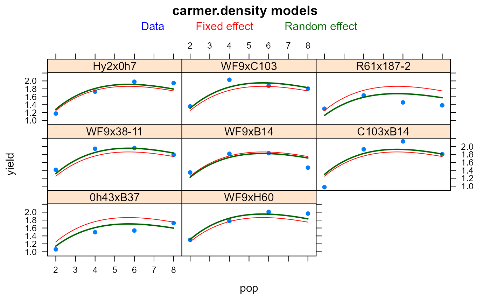

carmer.density.RdNonlinear maize yield-density model.
A data frame with 32 observations on the following 3 variables.
gengenotype/hybrid, 8 levels
poppopulation (plants)
yieldyield, pounds per hill
Eight single-cross hybrids were in the experiment--Hy2xOh7 and WF9xC103 were included because it was believed they had optimum yields at relatively high and low populations. Planted in 1963. Plots were thinned to 2, 4, 6, 8 plants per hill, giving densities 8, 16, 24, 32 thousand plants per acre. Hills were in rows 40 inches apart. One hill = 1/4000 acre. Split-plot design with 5 reps, density is main plot and subplot was hybrid.
S G Carmer and J A Jackobs (1965). An Exponential Model for Predicting Optimum Plant Density and Maximum Corn Yield. Agronomy Journal, 57, 241--244. http://doi.org/10.2134/agronj1965.00021962005700030003x
# \dontrun{ library(agridat) data(carmer.density) dat <- carmer.density dat$gen <- factor(dat$gen, levels=c('Hy2x0h7','WF9xC103','R61x187-2', 'WF9x38-11','WF9xB14','C103xB14', '0h43xB37','WF9xH60')) # Separate analysis for each hybrid # Model: y = x * a * k^x. Table 1 of Carmer and Jackobs. out <- data.frame(a=rep(NA,8), k=NA) preds <- NULL rownames(out) <- levels(dat$gen) newdat <- data.frame(pop=seq(2,8,by=.1)) for(i in levels(dat$gen)){ print(i) dati <- subset(dat, gen==i) mi <- nls(yield ~ pop * a * k^pop, data=dati, start=list(a=10,k=1)) out[i, ] <- mi$m$getPars() # Predicted values pi <- cbind(gen=i, newdat, pred= predict(mi, newdat=newdat)) preds <- rbind(preds, pi) }#> [1] "Hy2x0h7" #> [1] "WF9xC103" #> [1] "R61x187-2" #> [1] "WF9x38-11" #> [1] "WF9xB14" #> [1] "C103xB14" #> [1] "0h43xB37" #> [1] "WF9xH60"#> a k pop.opt #> Hy2x0h7 0.782 0.865 6.875 #> WF9xC103 1.039 0.825 5.192 #> R61x187-2 0.998 0.798 4.441 #> WF9x38-11 1.042 0.825 5.203 #> WF9xB14 1.067 0.806 4.647 #> C103xB14 0.813 0.860 6.653 #> 0h43xB37 0.673 0.862 6.740 #> WF9xH60 0.858 0.854 6.358## a k pop.opt ## Hy2x0h7 0.782 0.865 6.875 ## WF9xC103 1.039 0.825 5.192 ## R61x187-2 0.998 0.798 4.441 ## WF9x38-11 1.042 0.825 5.203 ## WF9xB14 1.067 0.806 4.647 ## C103xB14 0.813 0.860 6.653 ## 0h43xB37 0.673 0.862 6.740 ## WF9xH60 0.858 0.854 6.358 # Fit an overall fixed-effect with random deviations for each hybrid. libs(nlme) m1 <- nlme(yield ~ pop * a * k^pop, fixed = a + k ~ 1, random = a + k ~ 1|gen, data=dat, start=c(a=10,k=1)) # summary(m1) # Random effect for 'a' probably not needed libs(latticeExtra) # Plot Data, fixed-effect prediction, random-effect prediction. pdat <- expand.grid(gen=levels(dat$gen), pop=seq(2,8,length=50)) pdat$pred <- predict(m1, pdat) pdat$predf <- predict(m1, pdat, level=0) xyplot(yield~pop|gen, dat, pch=16, as.table=TRUE, main="carmer.density models", key=simpleKey(text=c("Data", "Fixed effect","Random effect"), col=c("blue", "red","darkgreen"), columns=3, points=FALSE)) + xyplot(predf~pop|gen, pdat, type='l', as.table=TRUE, col="red") + xyplot(pred~pop|gen, pdat, type='l', col="darkgreen", lwd=2)# }